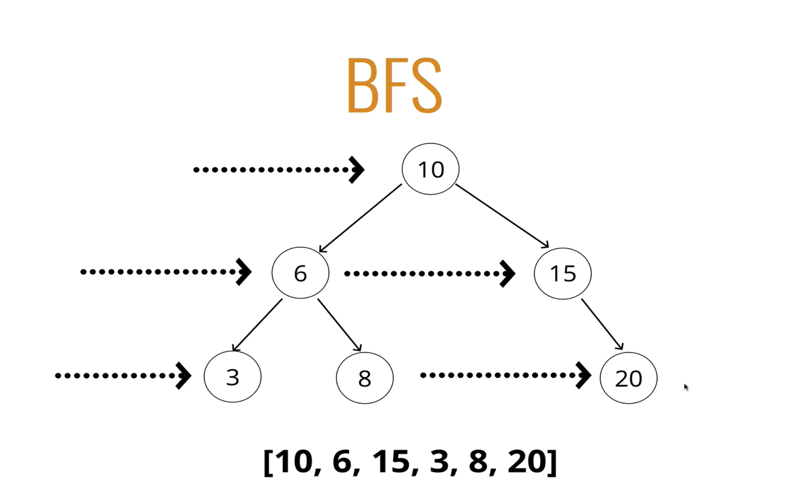
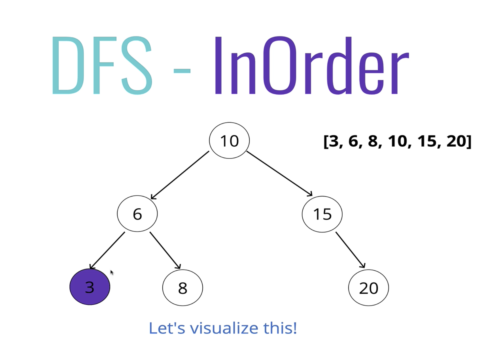

two ways to traverse the tree
-
Breadth-first Search
-
Depth-first Search


BFS
Steps - Iteratively
-
Create a queue (this can be an array) and a variable to store the values of nodes visited
-
Place the root node in the queue
-
Loop as long as there is anything in the queue
-
Dequeue a node from the queue and push the value of the node into the variable that stores the nodes
-
If there is a left property on the node dequeued - add it to the queue
-
If there is a right property on the node dequeued - add it to the queue
-
Return the variable that stores the values